Operating System (BCSE303P)
Course Project – End-to-End Project Guide
L15+L16
Faculty: Dr. Anisha M. Lal
Adaptive CPU Scheduling Using Predicted Burst Lengths
Prepared by
| Shivaansh Aggarwal | 24BCE0883 |
| Devansh Sharma | 24BCE0717 |
| Shivaansh Aggarwal | 24BCE0883 |
| Devansh Sharma | 24BCE0717 |
What it is. A CPU scheduler that predicts how long each process will run on its next CPU burst, and uses that prediction twice: to decide which process runs next, and to decide how long it may run (the time quantum). The time quantum is recalculated continuously while the system runs, instead of being fixed by hand.
Why. SJF gives the lowest average waiting time but needs the next burst length, which nobody knows in advance. The usual estimate, exponential averaging, reacts slowly when a process changes behaviour. Round Robin needs a quantum, and the textbook rule for choosing one (about 80% of bursts should finish within one quantum) is normally applied once by a person and never revisited.
How it was built. Everything is in Python. A discrete-event simulator models one CPU with processes that alternate CPU bursts and I/O. Eleven scheduler configurations run on exactly the same workloads: FCFS, SJF, SRTF, Round Robin (four quanta), MLFQ, an oracle that knows the future, and two versions of the proposed scheduler. A gradient-boosting model, trained on generated process histories, predicts the next burst.
Result in one line. On the mixed workload, the realistic case, the proposed scheduler cuts average waiting time by 27% compared with SJF using exponential averaging. It is better on all 10 seeds, closes 54% of the gap to the oracle, lowers the worst-case wait by 23%, and uses 61% fewer context switches than Round Robin with a 5 ms quantum. It does not help on workloads made only of short random bursts, and the documents say so openly.
What happens when the prediction is wrong. A burst that runs longer than predicted keeps its short estimate, so with time slicing it returns to the ready queue looking short again and again. An overrun guard fixes this: once a burst clearly outruns its prediction, its estimated time left becomes max(prediction, 0.25 × CPU time used). On the intentionally adversarial W7 bait-and-switch workload the guard cuts the average wait by 21.5% and interactive waiting by 92%, with no significant change on W1–W5. MLFQ still has a lower average wait on W7, and a second idea, persistent ageing, made average waits worse and was not kept. Every main claim is checked with paired statistical tests.
| Term | Meaning in this project |
|---|---|
| CPU burst / I/O burst | A period of computing / a period of waiting for I/O. Every process here is cpu, io, cpu, io, …, cpu. |
| Waiting time (W) | Time spent in the ready queue: turnaround − CPU time − I/O time. The main metric. |
| Turnaround time (T) | Completion time − arrival time. |
| Response time (R) | First time on the CPU − arrival time. Matters for interactive programs. |
| Context switch | Moving the CPU to a different process. Costs 0.1 ms in the simulator. |
| FCFS | Runs in arrival order. Convoy effect: 24, 3, 3 ms bursts give 17 ms average wait. |
| SJF / SRTF | Shortest burst first; SRTF also preempts when a shorter job arrives. Optimal on average, but needs burst lengths. |
| Exponential averaging (EMA) | τn+1 = αtn + (1−α)τn, α = 0.5. The classical burst estimate. |
| Round Robin (RR), quantum | Each process gets at most q ms, then goes to the back of the queue. |
| MLFQ | Multilevel feedback queue: processes that use their whole quantum drop a level; periodic boost avoids starvation. |
| Starvation, ageing | A process waiting forever; ageing improves a process's priority the longer it waits. |
| Oracle | SRTF that knows every true burst length: a reference that uses information no real scheduler has. Not a lower bound when processes have many bursts (FCFS beats it on W5). |
| MAE | Mean absolute error of the burst prediction, in ms. |
| Seed | A number that fixes the random workload, so a run can be repeated exactly. Seeds 1000–1004 train the model, 100–102 tune parameters, 0–9 evaluate. |
| Overrun guard | Once a burst has run longer than its prediction × the median observed actual/predicted ratio, its time left is taken as max(prediction, 0.25 × CPU time used), so it stops looking like a short job. |
| Noisy oracle | A diagnostic predictor that reads the true burst and multiplies it by exp(σZ). Used only to measure how much prediction quality matters; never a real scheduler. |
| W7 bait-and-switch | An intentionally adversarial workload: 30% of processes run many ~1 ms bursts and then one ~400 ms burst. They are 76% of the CPU demand. |
| Paired test, CI, Holm | Each comparison uses the same 10 seeds for both schedulers. 95% confidence intervals come from a bootstrap; p-values from the exact Wilcoxon signed-rank test, Holm-corrected. Significant means Holm p < 0.05. |
The key design decision is that the simulation engine never makes a scheduling decision. It owns the clock, the event queue and the process control blocks (PCBs), and whenever a decision is needed it calls the policy interface. Any scheduler that implements the interface can be plugged in. This guarantees that every scheduler is tested on identical arrivals, bursts, I/O times and switch costs, so differences in the results come only from the decisions.
Inside the adaptive scheduler, the feature extractor turns a process's history into 12 numbers, the burst predictor estimates the next burst, the classifier labels the process type, the ready-queue ordering applies the ageing formula (and, in Adaptive-ML-G, the overrun guard), and the quantum controller recomputes the time slice. When a burst completes, the feedback loop records the error and stores the example for refitting. After a run, the metrics collector computes all measures and the analysis step produces tables and figures.
Following one process through the engine (scheduler/engine.py) makes the whole system easy to understand:
ARRIVAL event for every process into a priority queue ordered by time._start_burst) and it joins the ready queue (_make_ready). The policy's on_ready hook runs; for the adaptive scheduler, this is where the next burst is predicted.should_preempt whether the newcomer should interrupt the running process.select to pick a process and time_slice to get its quantum. If the process differs from the last one, a 0.1 ms switch cost is charged. A SLICE_END event is scheduled at start + min(quantum, remaining burst).on_burst_complete runs (feedback loop), and an IO_DONE event is scheduled after the I/O time. If the quantum ran out instead, on_quantum_expired runs and the process goes back to the ready queue.SimResult with all PCBs, the timeline and the switch count.Two details keep the engine correct. First, all events at the same time are processed before a decision is made, so processes arriving together are all considered (this is what makes the SJF example give exactly 3 ms). Second, when a slice is cut short by preemption, its pending SLICE_END event is cancelled with a token, so it cannot fire later by mistake.
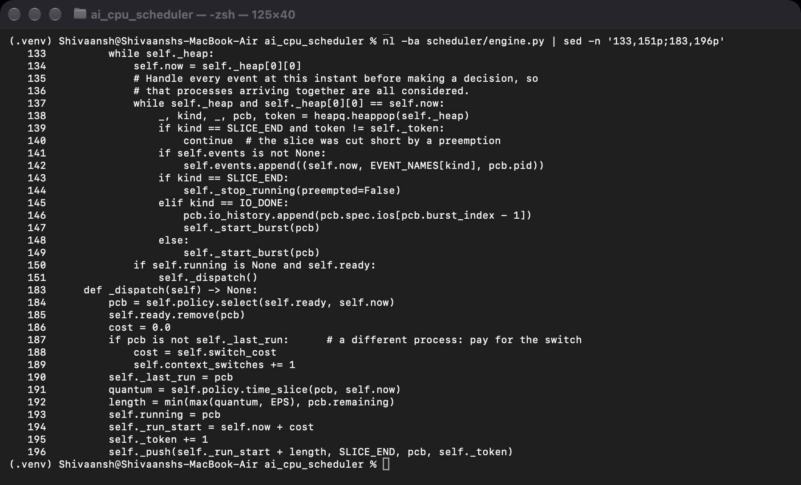
| File | What is inside |
|---|---|
| scheduler/workload.py | ProcessSpec (one process: arrival, bursts, I/O waits, true class of each burst). make_process draws one process of a type. generate_workload(profile, seed) builds W1–W6 with Poisson arrivals at 85% load. shifting_workload builds the changing workload used for the quantum figure. simple_processes builds textbook examples. The adversarial W7 and its bait process type are kept in ADVERSARIAL_PROFILES, separate from W1–W6. |
| scheduler/engine.py | PCB (run-time state), Policy (the interface: on_ready, select, time_slice, should_preempt, on_quantum_expired, on_preempt, on_burst_complete, stats), Simulator (event loop), SimResult. |
| scheduler/baselines.py | FCFS, RoundRobin, SJF, SRTF, MLFQ, Oracle; PredictivePolicy (shared code for policies that use a predictor); estimated_remaining. |
| scheduler/features.py | ema_estimate, extract_features (the 12 features), build_dataset (one row per burst for training). |
| scheduler/predictor.py | BurstPredictor (base: times each prediction, logs each error), EMAPredictor, MLPredictor (learned model with online refit), NoisyOraclePredictor (diagnostic only), ProcessClassifier. |
| scheduler/quantum.py | compute_quantum (the percentile rule) and QuantumController (epochs, smoothing, error ratios, class modulation, ratio_percentile used by the guard). |
| scheduler/adaptive.py | priority_score, guarded_remaining (the overrun guard) and AdaptiveScheduler (ordering with ageing, optional guard and persistent ageing, uses the controller for the quantum). |
| scheduler/metrics.py | per_process (T, W, R per process), summarize (one result row per run), jain_index, count_starved, oracle_gap_closed. |
| scheduler/configs.py | The 11 configuration names plus Adaptive-ML-G, -A and -GA, default parameters (β = 0.03, p = 80, E = 50, γ = 0.3), the tuned guard (c = 0.25, median ratio), ablation variants, make_policy(name) and run_policy(specs, name). |
| train_models.py | Builds the training data, compares 4 regressors and 2 classifiers, saves the chosen models. |
| tune_beta.py | Chooses the ageing weight β on separate seeds. |
| run_experiments.py | Runs the full experiment in parallel across CPU cores and saves raw CSVs. |
| analyse.py | Turns the CSVs into REPORT.md, a summary table and 8 figures. |
| demo.py | 10-second live demo in three parts (--part 1/2/3). |
| tune_innovation.py | Tunes the guard and persistent ageing on seeds 100–102; also measures how much waiting the ageing reset discards. |
| run_innovation.py | Prediction-quality sweep (--part noise) and the W1–W7 comparison of 14 configurations (--part compare); writes results/innovation/. |
| analyse_innovation.py | Paired statistics, results/innovation/REPORT.md and the three figures in figures/innovation/. |
| demo_innovation.py | 10-second live demo of W7: SJF-EMA, RR-5, MLFQ, Adaptive-ML and Adaptive-ML-G on one instance. |
| tests/ | 53 pytest tests: the original 37 plus 16 for the noisy oracle, the guard, persistent ageing, W7 and reproduction of the saved results. |
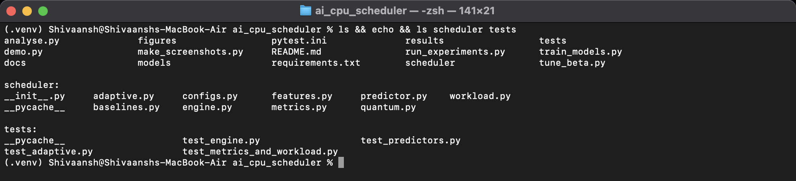
To see how small a policy is, this is the complete Round Robin and SJF code. Round Robin always picks the front of the queue with a fixed quantum; SJF picks the smallest predicted burst:
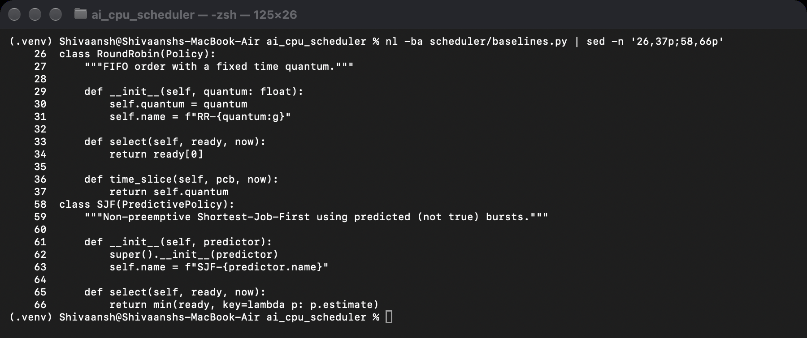
For every process, 12 features are built only from bursts and I/O waits that have already finished, all of it information the operating system already has: the last 5 burst lengths, the mean and standard deviation of past bursts, the exponential average estimate, the last and mean I/O wait, the number of bursts completed, and the change between the last two bursts. A test checks that changing a process's future bursts does not change its features, which proves there is no leakage.
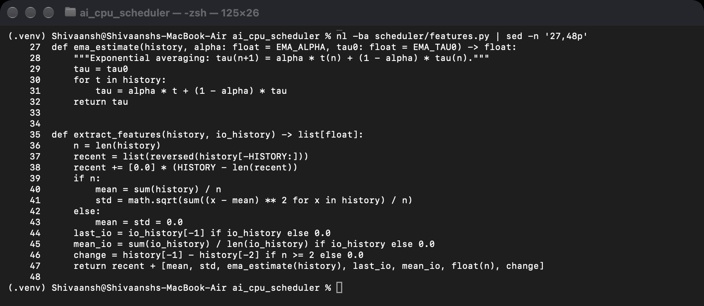
train_models.py generates 2,000 processes (500 of each type) from seeds 1000–1004, which are never used in the experiments. Because the features depend only on a process's own history, the dataset (45,389 rows, one per burst) is built directly without running the simulator. It is split 75/25 by process, so no process appears in both training and testing.
| Model | MAE (ms) | Latency per prediction | Notes |
|---|---|---|---|
| Exponential averaging | 12.36 | ~0 | The baseline to beat |
| Ridge regression | 14.82 | 0.08 ms | A single linear rule cannot fit all process types |
| Gradient boosting | 12.59 | 0.50 ms | Large bursts dominate the squared error |
| Gradient boosting, log target | 10.62 | 0.50 ms | Chosen: 14% lower error, better for every type |
Selection rule: lowest error within a 1 ms latency budget, with Ridge preferred if within 5%. Training on log(burst) helps because burst lengths range from 0.05 ms to hundreds of ms. A logistic regression classifier (macro-F1 0.94) is also saved; a random forest scored 0.94 but was 20 times slower.
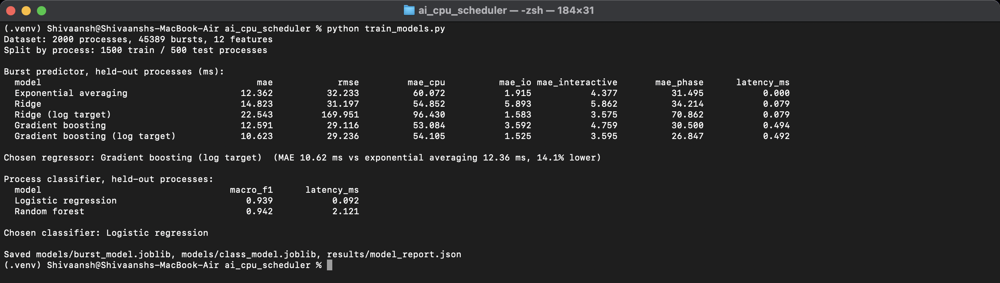
Why single-threaded? scikit-learn normally uses all CPU cores, but the simulator asks for one prediction at a time. Starting threads for one row made each prediction take 3.7 ms instead of 0.5 ms, so scheduler/__init__.py sets OMP_NUM_THREADS=1.
When a burst finishes, observe() compares it with the prediction, logs the error (this is how prediction MAE is reported for every run) and adds the example to a rolling buffer of 4,000. Every 2,000 new examples the model is refitted on 10,000 offline rows plus the buffer. The quantum controller also keeps the last 200 ratios actual / predicted.
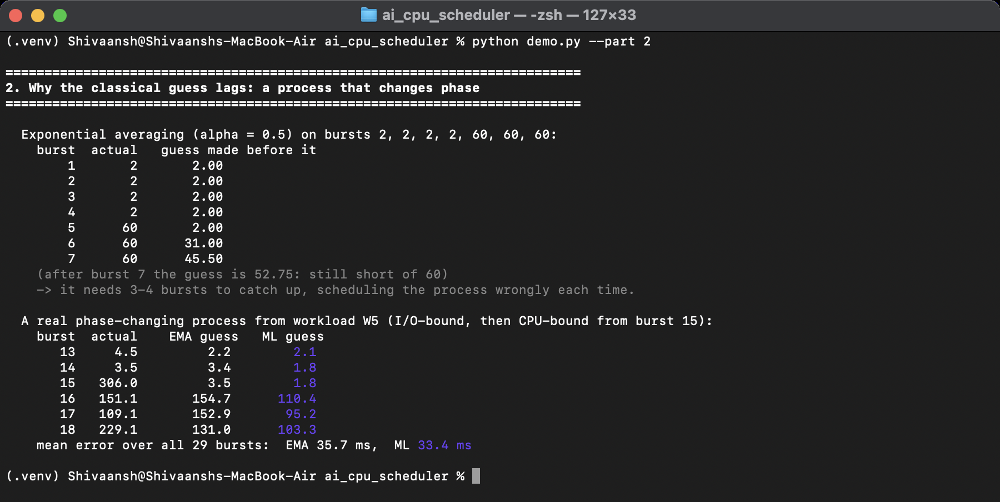
P = (predicted time left in the burst) − β × (time waited in the ready queue)
The lowest P runs. Predicted time left is the prediction minus the CPU time already received in this burst; if the burst has already run longer than predicted, the original prediction is used again. Example: with β = 0.1, process A predicted at 50 ms that has waited 400 ms has P = 50 − 40 = 10; process B predicted at 5 ms that has waited 10 ms has P = 5 − 1 = 4, so B runs. If A had waited 600 ms, P = −10 and A would run first. With β = 0 the scheduler is exactly SJF (checked by a test). The final value β = 0.03 was picked by tune_beta.py.
The overrun guard (Adaptive-ML-G). Falling back to the original prediction is exactly what goes wrong when a long burst was predicted as short: after every quantum it returns with the same short estimate. The guard keeps the normal rule until the burst has run longer than prediction × r, where r is the median of the last 200 ratios actual/predicted (at least 1). After that, time left = max(prediction, 0.25 × CPU time used). Example: predicted 1.2 ms, already ran 40 ms: time left 10 ms instead of 1.2 ms, so a new interactive burst predicted at 5 ms goes first; after 200 ms the burst looks like 50 ms. It never makes a burst look shorter than its prediction. c = 0.25 was chosen on seeds 100–102.
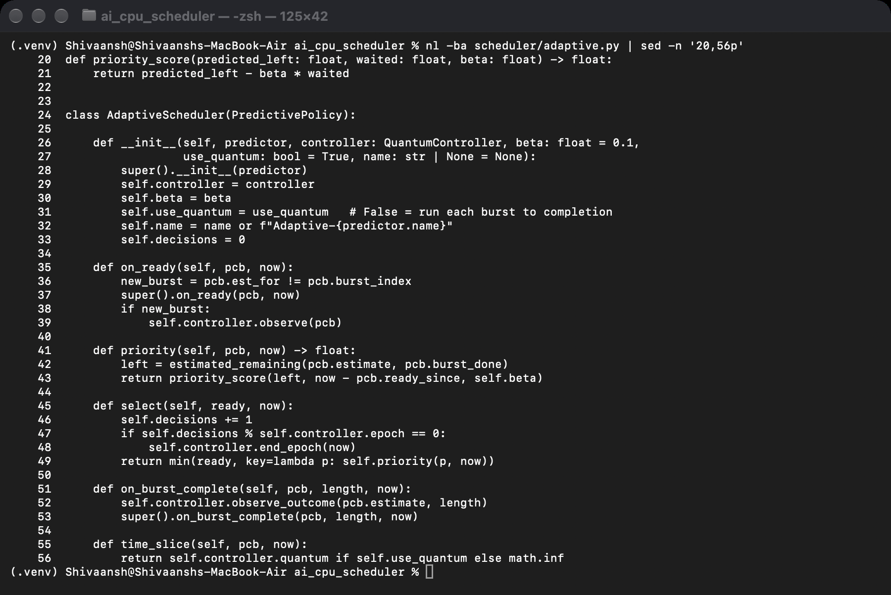
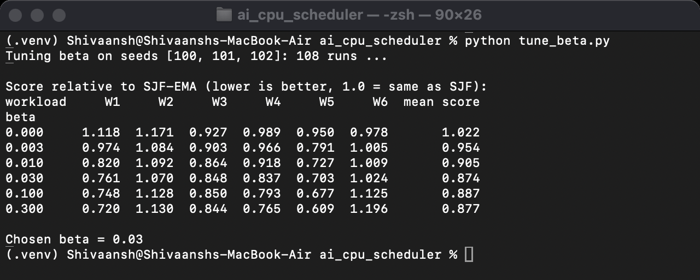
Every 50 decisions, the quantum controller takes the predictions of the bursts that became ready in that period, multiplies each by every recent error ratio, takes the 80th percentile, clamps it to 1–100 ms, and smooths it: q = 0.3 × qnew + 0.7 × q.
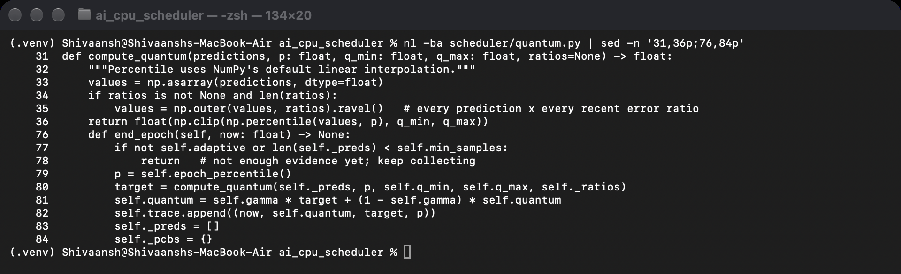
Worked example (I/O-bound workload). Bursts average 2 ms, so almost every prediction is about 2 ms. If the quantum used the raw predictions, the 80th percentile would be about 2 ms, too small, because 20% of real exponential bursts with mean 2 ms are longer than 3.2 ms. The recent ratios actual/predicted are spread widely, and for exponential bursts their 80th percentile is about 1.6, so the 80th percentile of 2 × ratios is about 3.2 ms, matching the textbook rule. Starting from q = 10 ms, smoothing gives 0.3 × 3.2 + 0.7 × 10 = 7.96 ms, then 6.5, 5.5, and so on, settling near 3.5 ms. This error-ratio fix was added after the first version produced quanta that were too small on W2 and W3.
Class modulation. The classifier labels the processes seen in the epoch; the percentile becomes 80 + 10 × (fraction CPU-bound − fraction interactive), limited to 50–95. Interactive mixes get a smaller quantum (faster response), CPU-bound mixes a larger one (fewer switches).
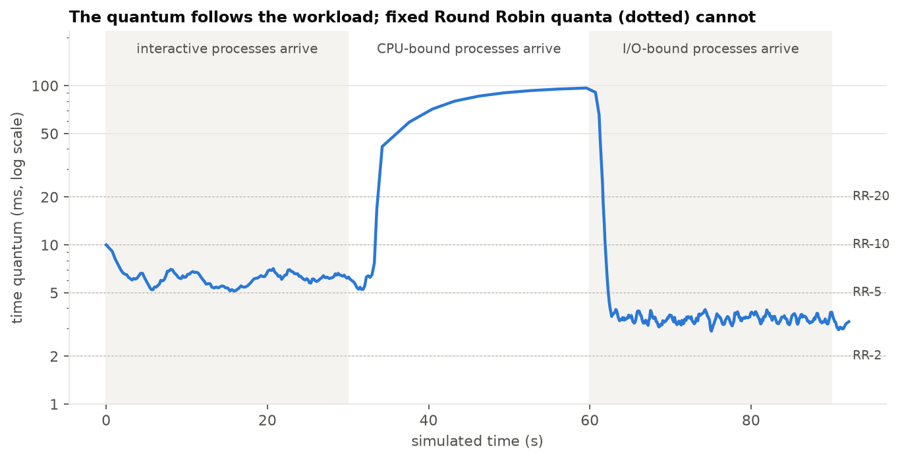
Workloads. Four process types: CPU-bound (lognormal bursts, median 100 ms, 3–8 bursts), I/O-bound (exponential, mean 2 ms, 20–60 bursts), interactive (exponential, mean 5 ms, 10–40 bursts) and phase-changing (I/O-bound then CPU-bound). Six profiles of 200 processes at 85% CPU load: W1 CPU, W2 I/O, W3 interactive, W4 mixed (40/30/20/10%), W5 phase-changing, W6 = W4 at 3× arrival rate.
Configurations (11). FCFS, SJF-EMA, SRTF-EMA, RR-2, RR-5, RR-10, RR-20, MLFQ, Oracle, Adaptive-EMA (our scheduler with the classical predictor) and Adaptive-ML (our scheduler).
Runs. 6 workloads × 11 configurations × 10 seeds = 660 paired runs, plus an ablation (120 runs), sweeps of β, p and E (130 runs) and switch costs of 0.05/0.1/0.5 ms (150 runs). The runs are spread over 9 worker processes and take about 4.5 minutes.
Pipeline.
train_models.py -> models/*.joblib, results/model_report.json
tune_beta.py -> results/beta_tuning.csv (chooses beta = 0.03)
run_experiments.py -> results/main_results.csv, ablation.csv, sweeps.csv,
switch_cost.csv, quantum_trace.csv, prediction_trace.csv
analyse.py -> results/REPORT.md, summary_means.csv, figures/fig1..fig8
tune_innovation.py -> results/innovation/tuning.csv,
ageing_reset_diagnostic.csv (chooses c = 0.25)
run_innovation.py -> results/innovation/noise_sweep.csv, comparison.csv
analyse_innovation.py -> results/innovation/REPORT.md, stats.csv,
figures/innovation/innov1..3Fairness of the comparison. Every policy sees the same seeds (paired comparison), the oracle gives a reference point, and expected outcomes (H1–H7) were written down before any experiment. Review 1's rule was that an improvement only counts if the mean paired improvement over seeds is bigger than one standard deviation. On top of that, every main claim now has a paired bootstrap 95% confidence interval and an exact Wilcoxon test with Holm correction (Section 9.4).
The noisy oracle gives the scheduler the true burst times random error exp(σZ), for nine values of σ from 0 (perfect) to 2, on W4 and W5 (python run_innovation.py --part noise, about 20 s). The same noisy predictions go to the full proposed mechanism and to plain SJF.

W7 has 50% interactive, 20% I/O-bound and 30% bait processes. A bait process runs 10–20 bursts of about 1 ms, then one burst with a median of 400 ms, twice, then a few short bursts; the bait processes are 30% of the processes but 76% of the CPU demand (72–80% across seeds). It was designed to attack the scheduler, not to look like a normal system.
| W7, mean of 10 seeds (ms) | Interactive wait | Bait wait | Avg wait (all) | Worst wait | Starved / run |
|---|---|---|---|---|---|
| SJF-EMA | 4,149 | 4,169 | 3,847 | 13,766 | 3.4 |
| RR-5 | 796 | 3,977 | 1,741 | 9,803 | 0.0 |
| MLFQ | 443 | 4,188 | 1,495 | 10,536 | 0.0 |
| Adaptive-ML | 1,399 | 4,378 | 2,083 | 21,382 | 4.0 |
| Adaptive-ML-G | 112 | 5,349 | 1,634 | 20,283 | 6.9 |
The guard lowers the average wait by 21.5% and interactive waiting by 92% (both on 10 of 10 seeds, significant). The bait processes pay: they wait 22% longer, and starved processes rise from 4.0 to 6.9. MLFQ still has the lowest average wait on W7 (9.3% below the guard), and the worst case with the guard is about twice that of RR-5 and MLFQ.

On W1–W5 the guard changes the average wait by −1.8% to +0.1%, none significant after correction; on W6 it lowers it by 1.6%. The W4 worst case rises by 5.6% (not significant after correction). Separately, the ageing term restarts after every time slice: on the tuning seeds this discards 70% of the waiting on W4 (84% for the ten worst-off processes). A persistent version (Adaptive-ML-A, β = 0.01) improves W2 by 6.9%, but raises the average wait by 17.5% on W6 and 51.2% on W7, because the credit rewards the long bait bursts. It was not kept. The recommended configuration is Adaptive-ML-G.

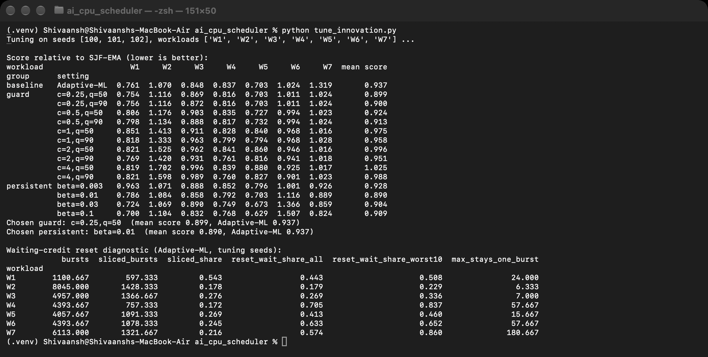
analyse_innovation.py compares configurations seed by seed: the change in the mean, a percentile bootstrap 95% confidence interval (10,000 resamples), the exact two-sided Wilcoxon signed-rank test, and a Holm correction within each family of related tests. With ten seeds the smallest possible p-value is 0.002. A result is called significant only if the Holm-corrected p is below 0.05; for example, the guard's +5.6% W4 worst case has unadjusted p = 0.027 but Holm p = 0.328, so it is not significant after correction.
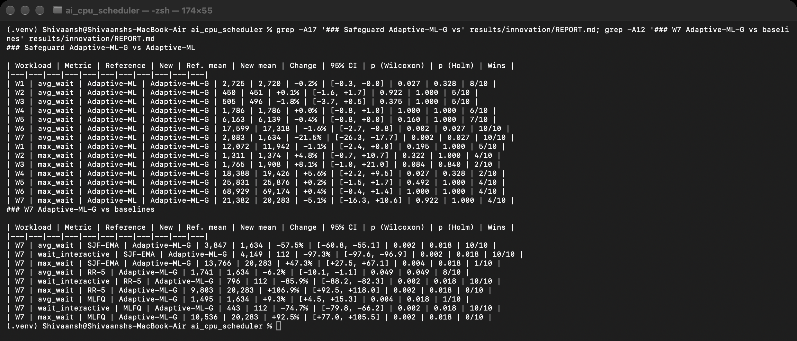
| Workload | Avg wait vs SJF-EMA | Worst wait vs SJF-EMA | Seeds better | Mean quantum |
|---|---|---|---|---|
| W1 CPU-bound | −1.9% | −56% | 7/10 | 92 ms |
| W2 I/O-bound | +13.8% | +0.5% | 0/10 | 3.5 ms |
| W3 Interactive | +5.3% | −27% | 2/10 | 6.4 ms |
| W4 Mixed | −27.4% | −23% | 10/10 | 18 ms |
| W5 Phase-changing | −1.7% | −53% | 4/10 | 95 ms |
| W6 Overload | +2.6% | −2% | 2/10 | 14 ms |
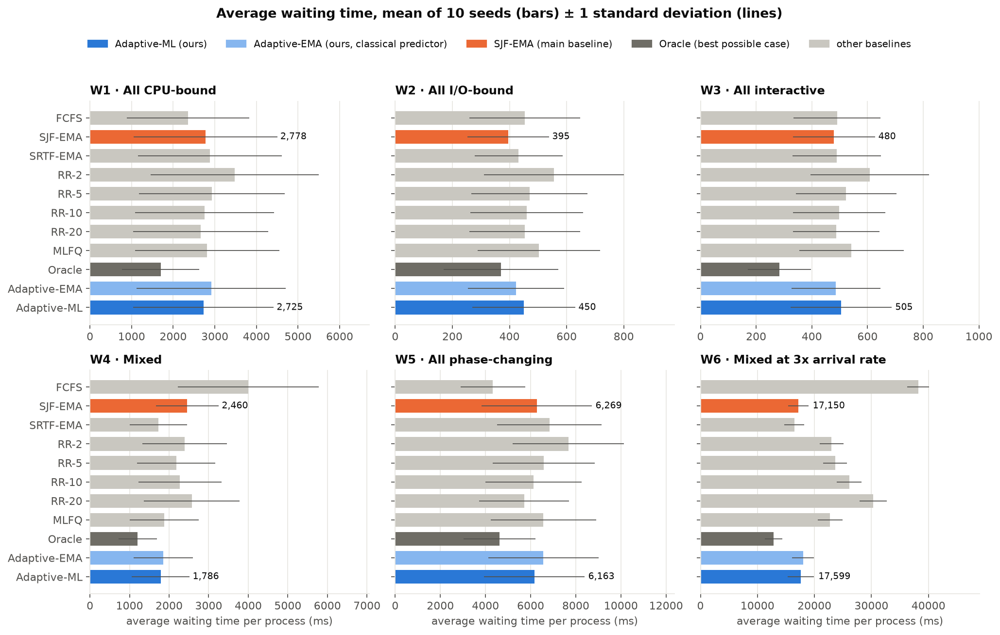
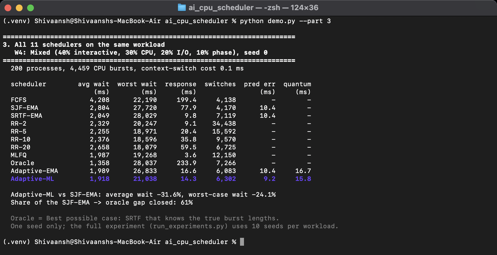
One-time setup (Python 3.10 or newer; on this laptop it is already done):
cd ~/Desktop/ai_cpu_scheduler python3 -m venv .venv source .venv/bin/activate pip install -r requirements.txt
Every time you open a new terminal: cd ~/Desktop/ai_cpu_scheduler && source .venv/bin/activate
| Command | Time | What it does |
|---|---|---|
pytest (or pytest -v) | 1 s | Runs the 53 tests |
python demo.py | 10 s | Full live demo; add --part 1, 2 or 3 for one part, --workload W5 for another workload |
python train_models.py | 10 s | Retrains and compares the models |
python tune_beta.py | 70 s | Re-tunes β |
python run_experiments.py | 4.5 min | Full experiment; --quick for 3 seeds in under a minute |
python analyse.py | 10 s | Rebuilds REPORT.md and the figures |
python demo_innovation.py | 10 s | Live W7 demo: the guard against SJF, RR-5, MLFQ and Adaptive-ML |
python tune_innovation.py | 4.5 min | Re-tunes the guard and persistent ageing on seeds 100–102 |
python run_innovation.py | 5 min | Noise sweep and the W1–W7 comparison (--part noise or compare for one) |
python analyse_innovation.py | 10 s | Rebuilds results/innovation/REPORT.md, stats.csv and figures/innovation/ |
sh docs/reviews/build.sh 3 | 5 s | Rebuilds Review_3.pdf (run python3 docs/reviews/src/number_refs.py first; needs Google Chrome). Without an argument it rebuilds all three reviews. |
The demo, part by part. Part 1 shows Gantt charts for four textbook examples and checks the averages (17, 3, 5.67, 6.5 ms). Part 2 shows exponential averaging lagging (2, 31, 45.5, 52.75) and compares EMA with the learned model on a real phase-changing process. Part 3 runs all 11 schedulers on one workload and prints average wait, worst wait, response, switches, prediction error and mean quantum, with Adaptive-ML highlighted.
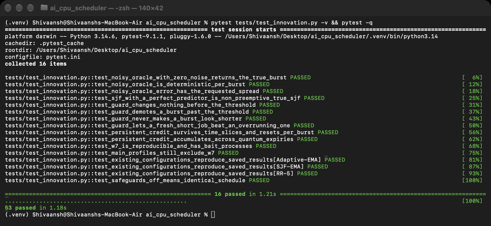
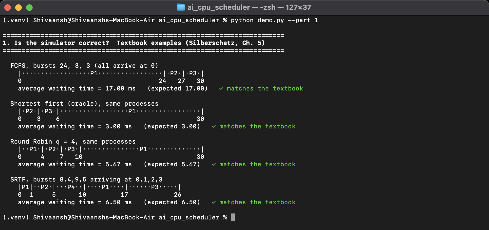
Troubleshooting. “burst_model.joblib not found” means the models are missing: run python train_models.py. “command not found: python” or missing modules means the virtual environment is not active: run source .venv/bin/activate. Results are deterministic, so re-running gives the same numbers (only timing measurements vary).
| Location | Contents |
|---|---|
| scheduler/ | The simulator, schedulers, predictor and adaptive scheduler |
| tests/ | The 53 tests |
| models/ | burst_model.joblib (predictor), class_model.joblib (classifier) |
| results/ | REPORT.md (every result and verdict), main_results.csv (660 rows, one per run), ablation, sweeps, switch-cost and trace CSVs, model_report.json, run_info.json |
| results/innovation/ | REPORT.md, stats.csv (every paired comparison), comparison.csv (980 runs, W1–W7, 14 configurations), noise_sweep.csv (480 runs), tuning.csv, tuning_round1.csv (superseded guard formula), ageing_reset_diagnostic.csv, run_info.json |
| figures/innovation/ | innov1 prediction-quality sweep, innov2 safeguards against Adaptive-ML, innov3 W7 waiting by process kind |
| figures/ | fig1 average wait, fig2 switches vs response, fig3 worst case, fig4 quantum over time, fig5 prediction example, fig6 ablation, fig7 sweeps, fig8 prediction error |
| docs/reviews/ | Review_1.pdf, Review_2.pdf, Review_3.pdf and their HTML sources |
| docs/terminal/ | Real Terminal screenshots used in the reviews |
| docs/guide/ | This guide and the presentation transcript |
| docs/ (older) | project_review.pdf, ieee_paper.pdf, rendered screenshots |
| README.md | Short version of this guide |
Why use machine learning at all?
Exponential averaging uses one feature and lags after phase changes. The model uses 12 features and is 12–22% more accurate. But the honest finding is that most of the gain comes from using the prediction twice, not from accuracy alone (Adaptive-EMA vs Adaptive-ML shows this).
How do you know the simulator is correct?
It reproduces textbook results exactly (17, 3, 5.67, 6.5 ms), every scheduler delivers the same total CPU time, event times never go backwards, and all 53 tests pass. Re-running the 11 original configurations also reproduces all 660 saved results exactly.
What if the prediction is wrong?
A wrong prediction only affects ordering and quantum; the process still runs. Ageing makes a long-waiting process go first eventually, the quantum uses observed error ratios, and the overrun guard stops a burst that has clearly outrun its prediction from being treated as short. Section 9 measures this directly.
Why not just use SRTF?
SRTF-EMA is 3% better on average on W4 but has a 35% higher worst-case wait and more switches, because it preempts whenever a newly ready process has a shorter predicted remaining time, and it has no ageing.
How did you avoid tuning to the test data?
The model was trained on seeds 1000–1004; β, the guard and persistent ageing were tuned on seeds 100–102; the evaluation used seeds 0–9. All the other parameters came from the original plan.
Why did you add the overrun guard?
Because a burst that outruns its prediction keeps its short estimate and is picked again after every quantum. On W7 this made the scheduler lose to Round Robin and MLFQ. The guard cuts W7's average wait by 21.5% and interactive waiting by 92%, with no significant change on W1–W5.
Isn't W7 designed to make the guard look good?
W7 is designed to expose the weakness, and the documents say it is adversarial. The guard still does not win everywhere on it: MLFQ has a 9.3% lower average wait and a much lower worst case. Its parameter was tuned on seeds 100–102 and the results come from seeds 0–9.
Why not keep persistent ageing?
It matches the stated intent better, but it raised average waits by 17.5% on W6 and 51.2% on W7, because it rewards long mispredicted bursts.
Why does it lose on I/O-bound workloads?
Bursts are short and random (exponential), so nothing can be predicted beyond the mean, and preempting at a small quantum adds context switches without improving the order.